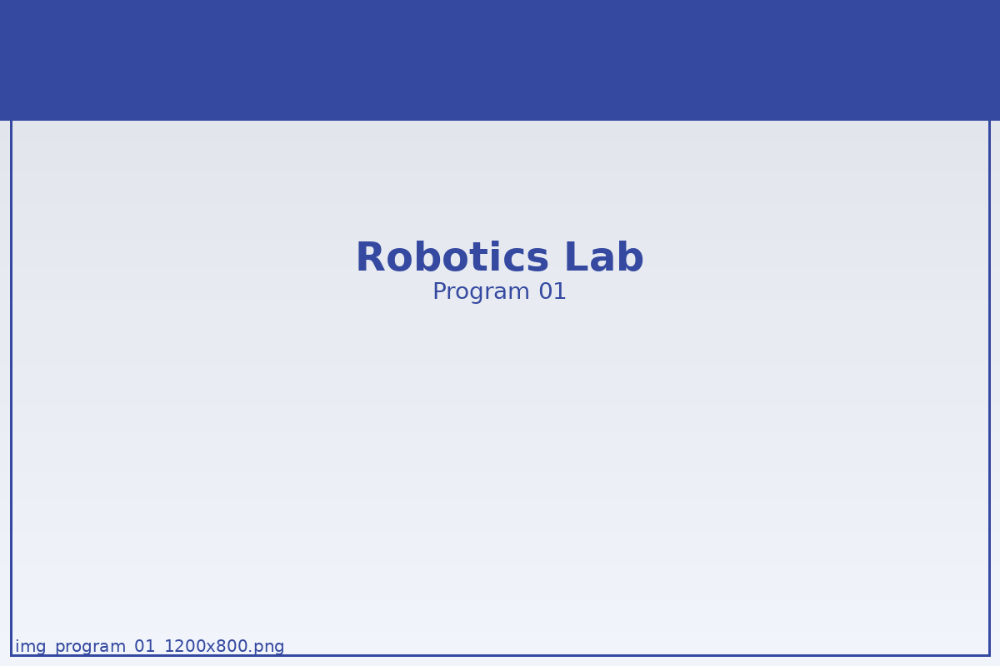
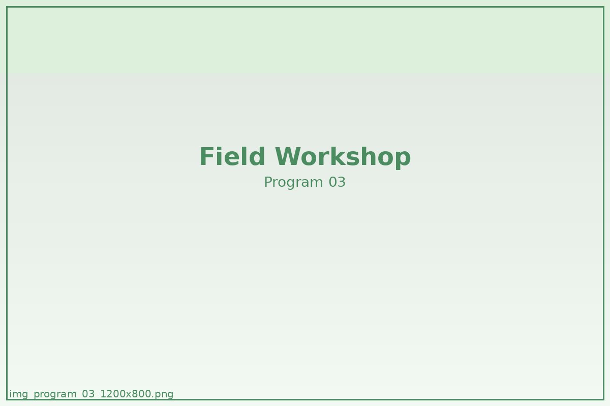

program code / 001
Cognitive Expansion Program
認知拡張プログラム
既存の知識を覚えるのではなく、思考の処理速度と選択精度を高める基幹プログラム。
問いの分解、再構成、言語化を繰り返し、思考の癖そのものを見直していきます。
詳しく見る思考の変化を扱うために設計されたNEXT FIELD EDUCATIONの独自プログラムをご紹介します。
覚えるための講座ではなく、判断し、試し、記録し、言葉にするためのプログラム群です。複数の方法論を組み合わせながら、参加者ごとの思考の輪郭を可視化していきます。
認知拡張プログラム
既存の知識を覚えるのではなく、思考の処理速度と選択精度を高める基幹プログラム。
問いの分解、再構成、言語化を繰り返し、思考の癖そのものを見直していきます。
詳しく見る
フィールドシミュレーション
正解のない状況下で、判断と結果を往復しながら選択の質を磨く実践型プログラム。
役割分担、検証、記録を通じて、複数人での意思決定プロセスを体験します。
詳しく見る
観測型ラーニング
自分自身の思考と行動を観測し、記録から次の選択へつなげるためのログ型プログラム。
記録の取り方そのものを学び、変化の兆しを自分の言葉で捉えていきます。
詳しく見る